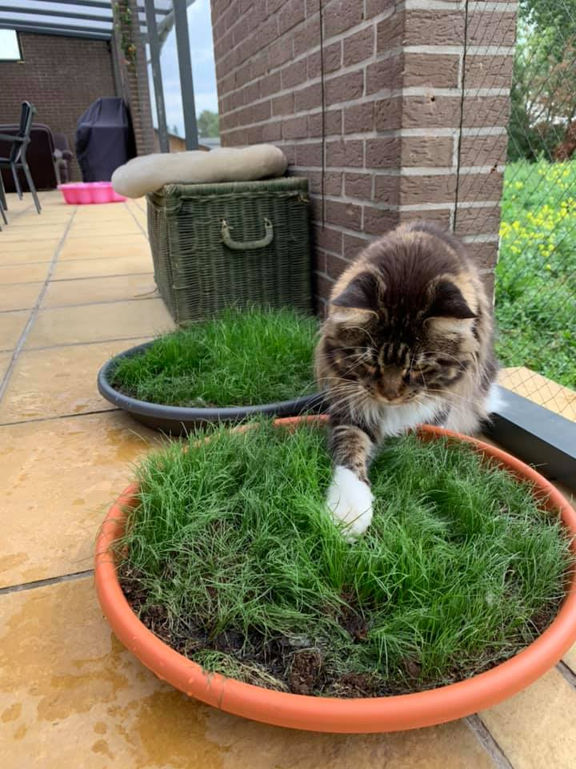

FIV, FeLV and FIP

These three short acronyms hide some of the most serious viral diseases in cats. Understanding what they are — and how they differ — helps owners protect their pets and react calmly if the words ever come up at the vet.
FIV — Feline Immunodeficiency Virus
Often called “feline AIDS”, FIV gradually weakens the immune system. It spreads mainly through deep bite wounds, so unneutered, roaming, fighting cats are most at risk. Many FIV-positive cats live long, comfortable lives indoors with good care; the virus is not transmissible to humans.
FeLV — Feline Leukaemia Virus
FeLV spreads through close, friendly contact — shared bowls, mutual grooming, saliva — which makes multi-cat households a concern. It can cause anaemia, immune suppression and certain cancers. A reliable vaccine exists, and testing new cats before introduction is strongly recommended.
FIP — Feline Infectious Peritonitis
FIP develops from a mutation of a common and usually harmless feline coronavirus. For a long time it was considered untreatable, but antiviral treatments developed in recent years have dramatically improved outcomes. Early veterinary diagnosis is key.
Prevention and peace of mind
Responsible breeders test their cats, keep their environment clean and low-stress, and introduce newcomers carefully. For pet owners, routine vet checks, appropriate vaccination and a stable home go a long way. If you ever have concerns, your veterinarian is the best source of advice.